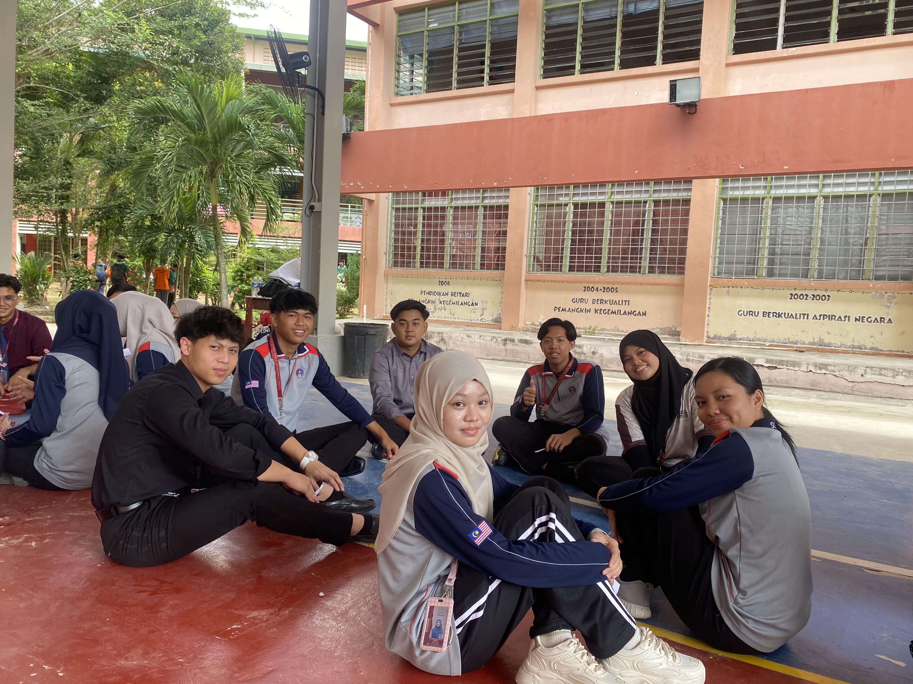

BORNEO CONSUMER HEROES 2025
This programme is organized by Gerakan Pengguna Siswa UTM where we went to Papar, Sabah to visit school and village to educate the community consumerism. We spent 4 days and 3 nights in Sabah where we learned a lot about their culture especially their famous dance "poco-poco".